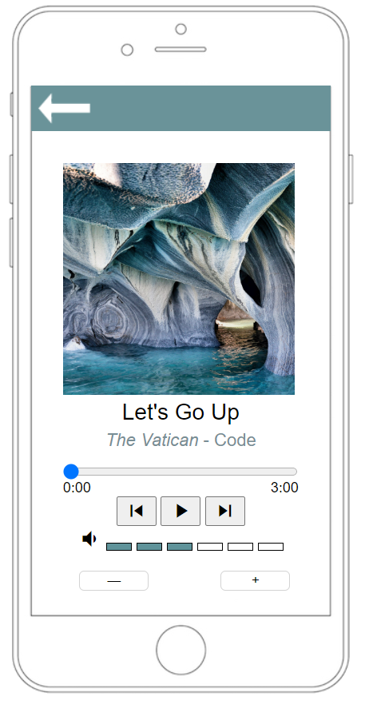
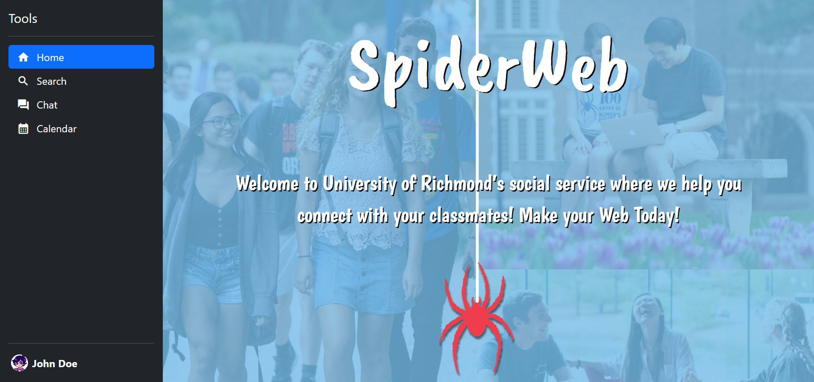

Welcome
I am Zander Hesch, thank you for visiting my webpage.My Projects
Mock iPhone Music Player
A mock version of a music player for iPhone. Features working JavaScript for playing and skipping songs as well as controlling volume.
SpiderWeb Prototype Website

A prototype website for a fictional service designed for University of Richmond that would provide an easier way to find study groups for classes. My work on this website was primarily on the chat feature.